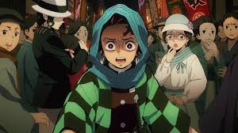

Episode 7:Muzan Kibutsuji
Tanjiro dives into the demon’s swamp dimension to finish off the remaining clones,
using his Water Breathing Sixth Form: Whirlpool to defeat them underwater. Meanwhile,
Nezuko battles the last clone on the surface, showing surprising strength. After
Tanjiro returns and finishes the fight, he questions the demon about Muzan
Kibutsuji—but the demon is too terrified to speak his name and is swiftly killed.
Tanjiro comforts Kazumi, the grieving fiancé, and prepares to move on. His crow
delivers a new mission: head to Asakusa, Tokyo. Upon arriving, Tanjiro is overwhelmed
by the bustling city—but then catches a familiar scent. He tracks it and comes
face-to-face with Muzan himself, disguised as a human with a wife and child. Muzan,
sensing danger, turns a passerby into a demon to distract Tanjiro and escape.
